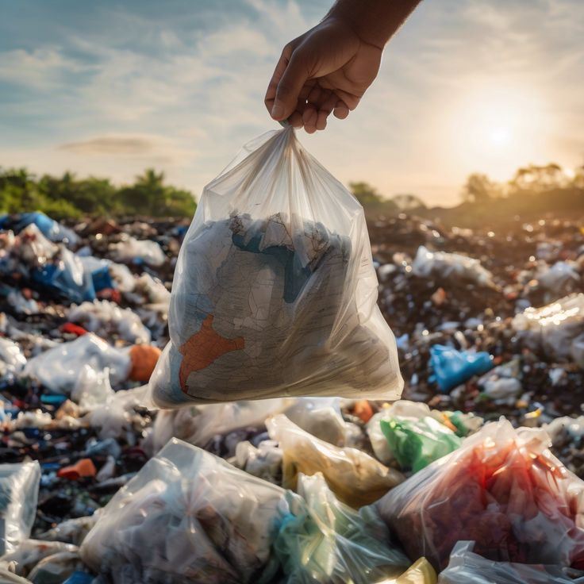

En Japón, aproximadamente el 1.10% de los residuos municipales se destinan a vertederos. Esta baja tasa es posible gracias a un extenso sistema de incineración con recuperación de energía y programas de reciclaje bien estructurados.
Este enfoque permite al país minimizar la ocupación de espacio para rellenos sanitarios y mitigar el impacto ambiental a largo plazo.
